Gioco di
Squadra.
Metodologie ludiche per il sociale
Il gioco come spazio di incontro, apprendimento e comunità. Persone, associazioni e territori uniti da esperienze condivise.
Ultime newsKick-off il 31 ottobre: si comincia ↗Ci si
incontra.
Si gioca.
Si cresce.
Una partita può essere molto più di un gioco. Può diventare un’occasione per conoscersi, collaborare, superare barriere e costruire nuove relazioni.
Gioco di Squadra porta il gioco da tavolo, il gioco di ruolo e il gioco di ruolo dal vivo nelle comunità toscane come strumenti di partecipazione, inclusione ed educazione non formale.
Leggi la storia del progettoTre modi
di stare insieme.
Tre linguaggi diversi, un obiettivo comune: creare spazi in cui ogni persona possa partecipare, sperimentare e sentirsi parte di un gruppo.
Si parte
da un tavolo.
Regole condivise, cooperazione, scoperta e nuove amicizie.
02 / GIOCHI DI RUOLOSi inventano
mondi.
Storie, immaginazione, ascolto e decisioni da prendere insieme.
03 / GIOCO DI RUOLO DAL VIVOSi diventa
protagonisti.
Esperienze immersive per incontrarsi, confrontarsi e collaborare.
Il prossimo
incontro
comincia qui.
Laboratori, percorsi e appuntamenti della rete. Le date saranno pubblicate man mano che i partner confermeranno le attività.
Apri tutto il calendarioIl partenariato
e la rete del progetto.
Federludo APS coordina una squadra di associazioni, enti, scuole e realtà del territorio. Ogni partner porta esperienze e competenze diverse, in una rete che attraversa la Toscana.
Esplora i territori sulla mappa ↗
Le associazioni del progetto
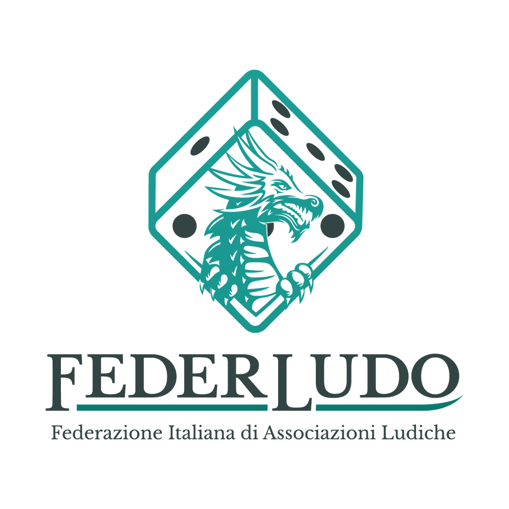
Federludo APS Capofila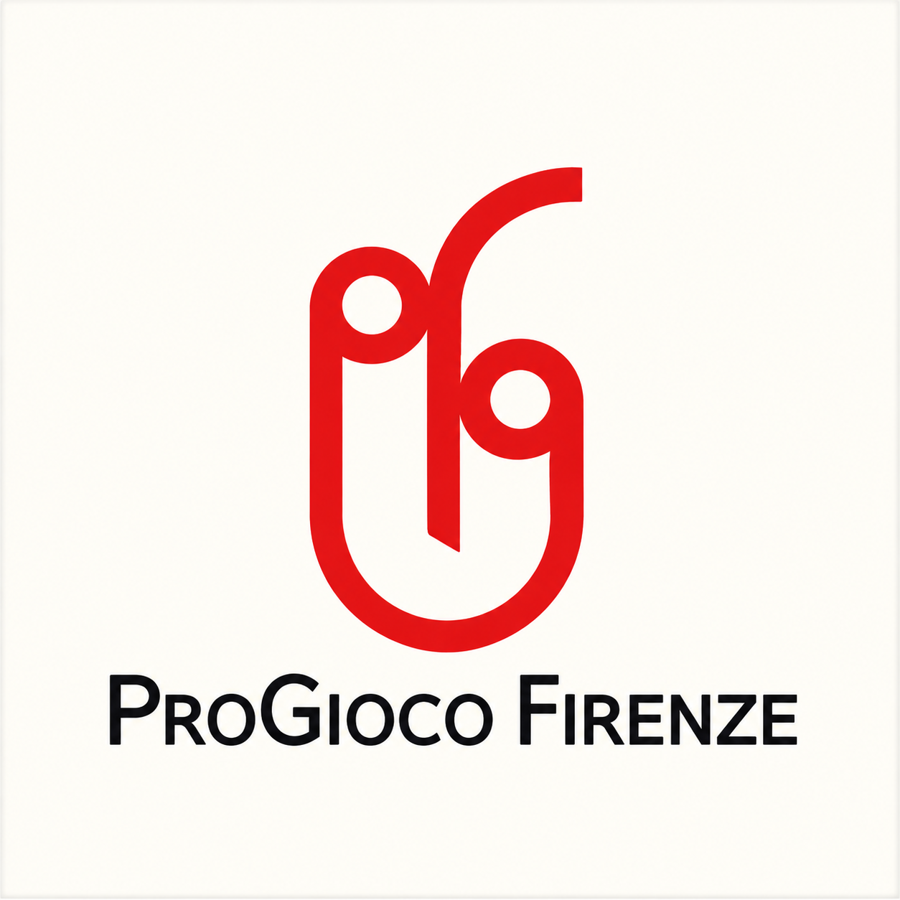
ProGioco Firenze APS Partner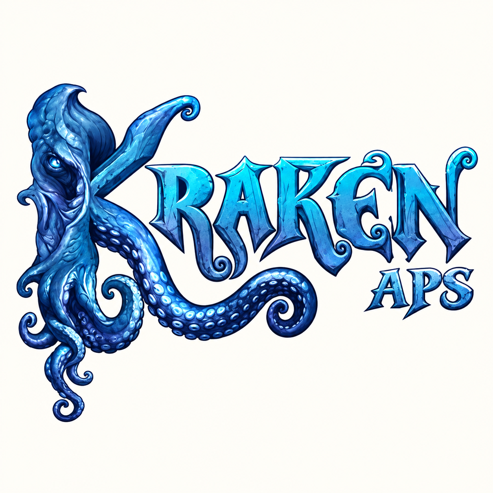
Kraken APS Partner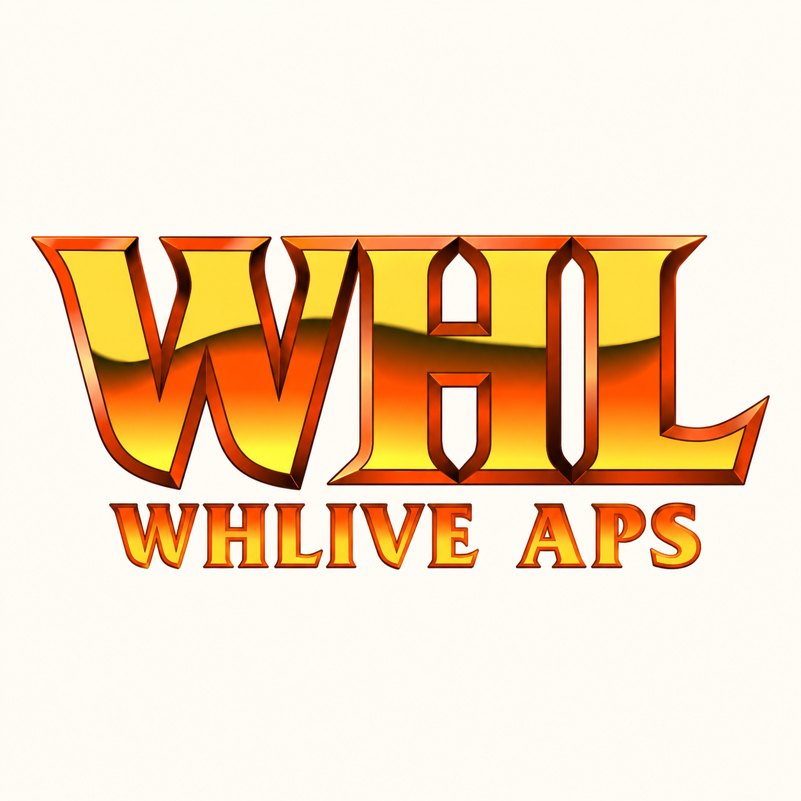
WHLive APS Partner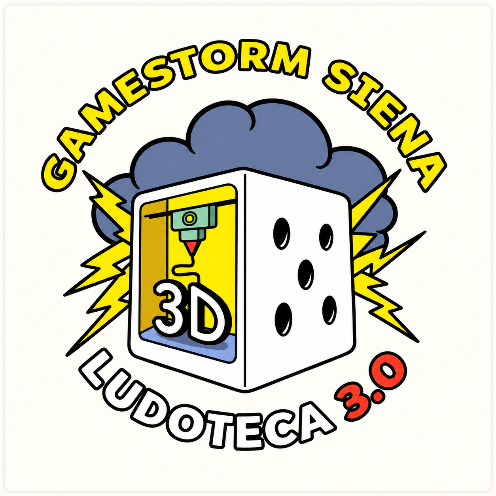
GameStorm Siena APS Partner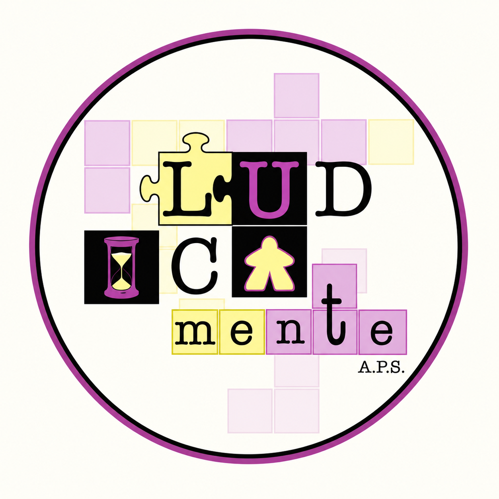
LUDICAmente APS Partner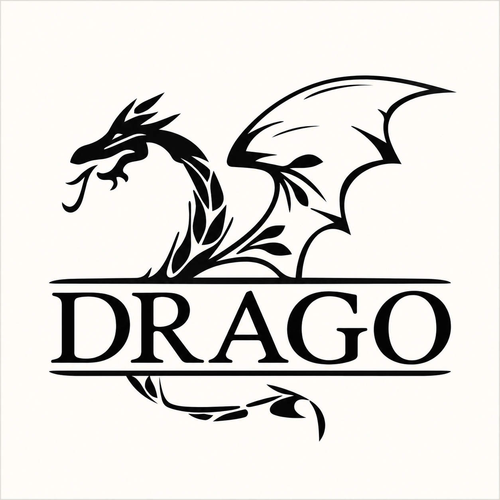
Il Drago delle Colline Metallifere APS Partner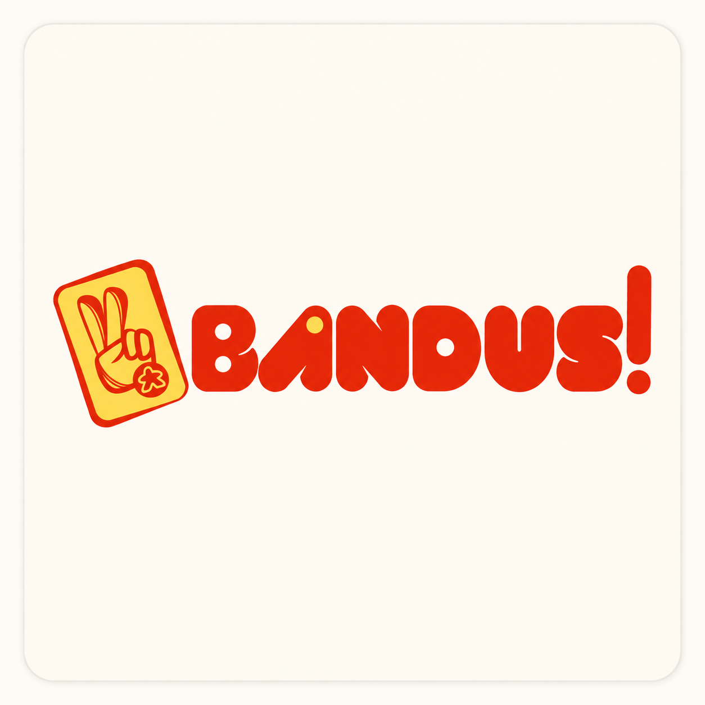
BANDUS! APS Partner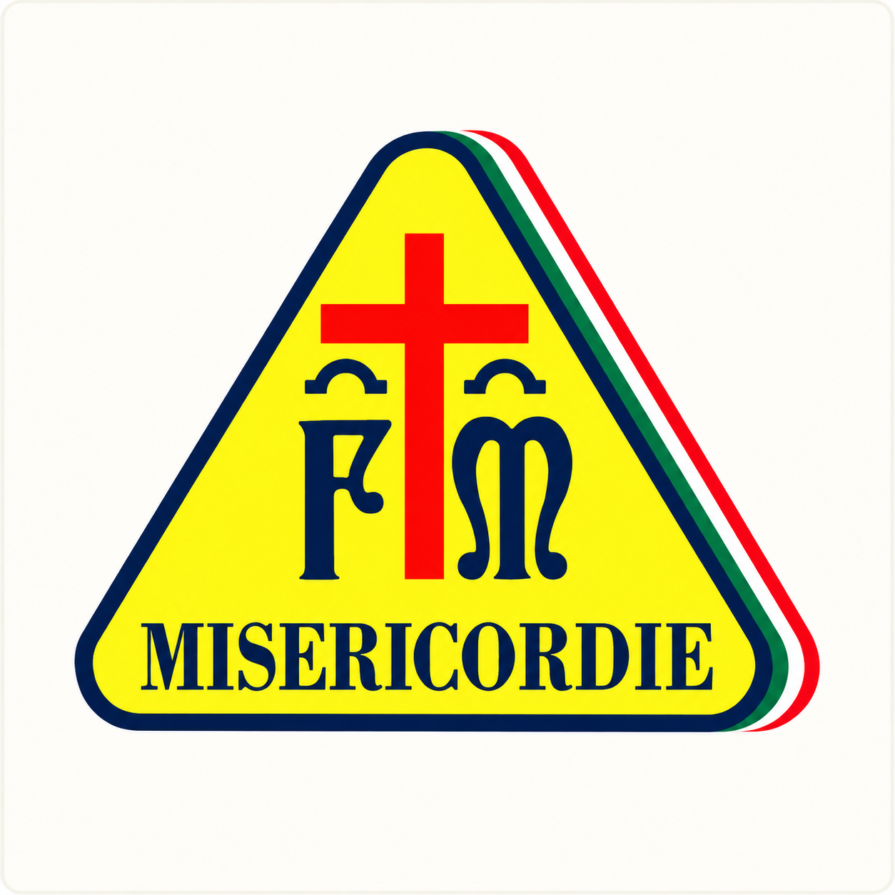
Misericordia di Prata Partner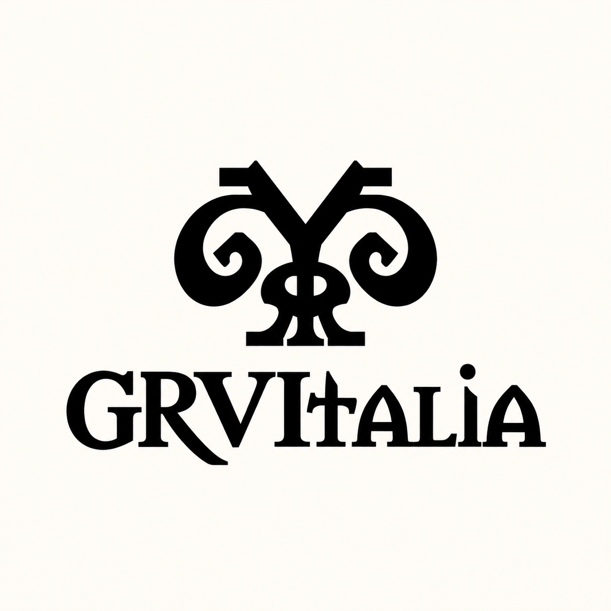
GRVItalia APS Partner Ingegneria del Buon Sollazzo APS PartnerStorie
e news.
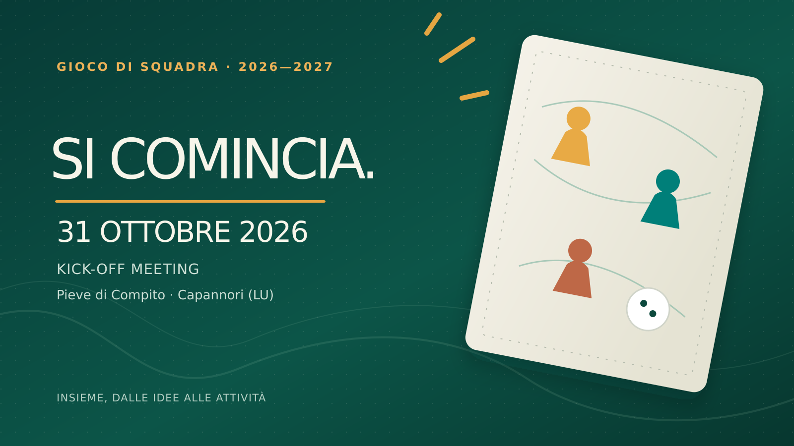
Il progetto · 26 ottobre 2026Il 31 ottobre ci incontriamo: al via il kick-off meeting di Gioco di Squadra
Sabato 31 ottobre, a Pieve di Compito (Capannori), le associazioni della rete si riuniscono per programmare le attività. Buffet finale offerto da Federludo.
Leggi la notizia ↗ Il progetto · 16 ottobre 2026
Il progetto · 16 ottobre 2026Gioco di Squadra prende il via: finanziato il progetto di rete
Un progetto condiviso da Federludo e dieci associazioni toscane, finanziato dalla Regione Toscana.
Leggi la notizia ↗C’è un posto
anche per te.
Segui gli appuntamenti e scopri come partecipare ai percorsi del progetto nel tuo territorio.